Префектура Окинава · Наха, Сюри · напитки
Ром из чёрного сахара: как старейшая винокурня авамори в Сюри разливает по бутылкам острова Окинавы
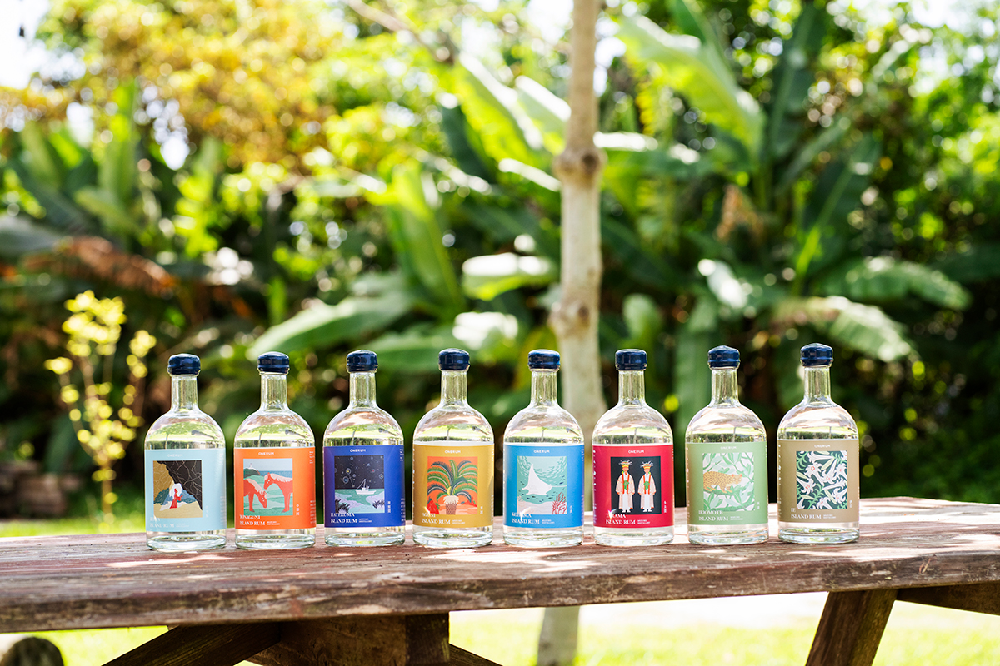
Mizuho Shuzo в районе Сюри делает авамори больше 170 лет. С 2021 года винокурня выпускает и ром из окинавского чёрного сахара, и у каждого острова здесь своя бутылка со своим вкусом.
Винокурня
Старейшая в Сюри
Во времена королевства Рюкю авамори был делом государственным. Его разрешали гнать только в трёх кварталах Сюри, рядом с замком: Торихори, Сакияма и Аката. Mizuho Shuzo основали в Торихори в 1848 году, и сегодня это самая старая винокурня Сюри. Она же одной из первых начала продавать кусу, выдержанный авамори, который раньше пили только дома.
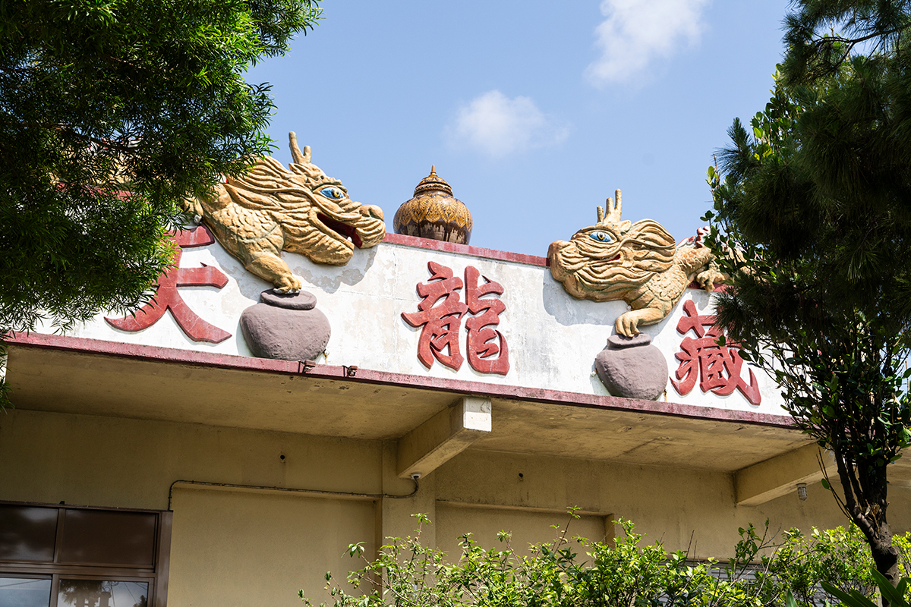
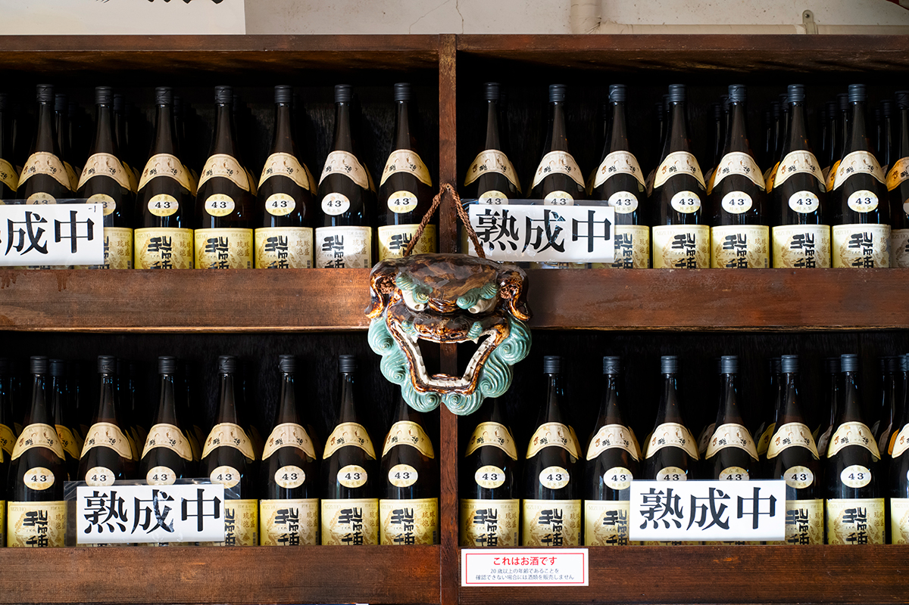
Около 2018 года на винокурне взялись за джин. В 2021 году на британском конкурсе International Wine and Spirits Competition (IWSC) восемь её напитков получили награды сразу в трёх категориях: сётю (авамори), биттеры и джин. Так авамори, о котором за пределами Окинавы почти не слышали, впервые заметили на мировой сцене.
За этими напитками стоит Акира Накадзато, руководитель отдела разработки продукции. Молодёжь пьёт авамори всё реже, продажи падают, и пандемия, по его словам, стала для винокурни поводом заново решить, куда двигаться дальше.
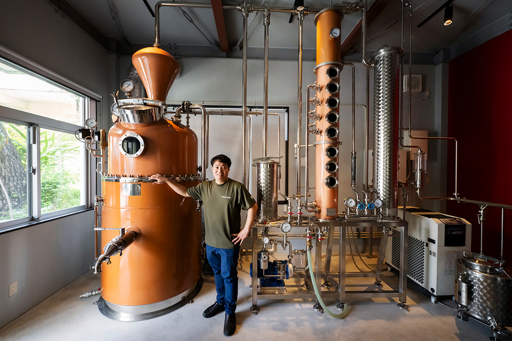
Идея
Чёрный сахар, которого слишком много
Примерно тогда же Акира Накадзато познакомился с человеком из шоколадной мастерской TIMELESS CHOCOLATE. Тот говорил, что у Окинавы есть сахарный тростник и чёрный сахар, которыми можно гордиться перед всем миром, и что этот терруар надо использовать гораздо шире. Мысль запала в душу.
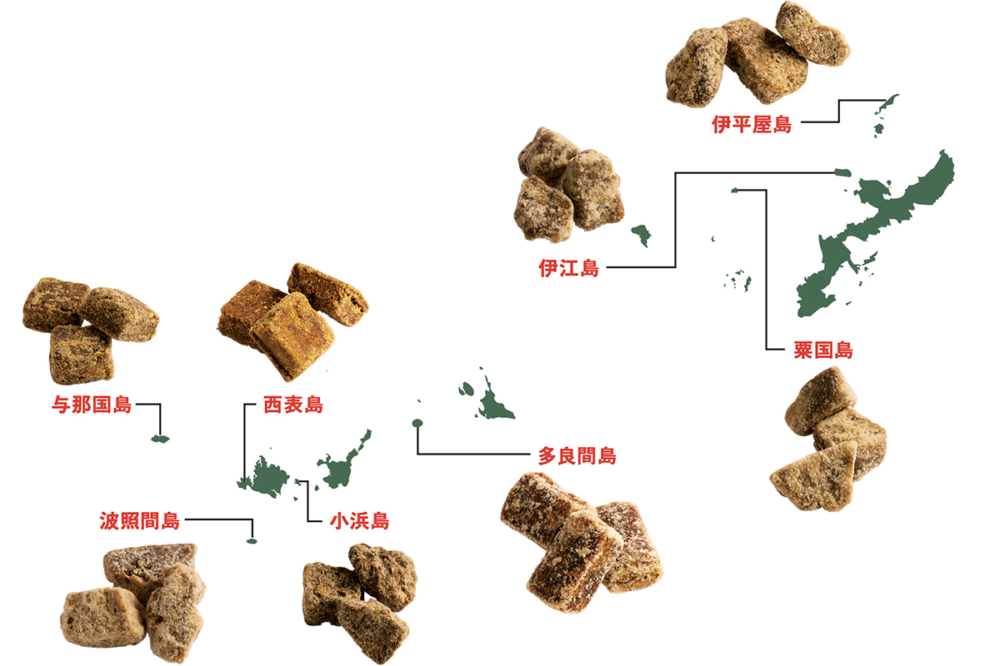
«Я знал, что спрос на чёрный сахар падает так же, как на авамори, а из-за пандемии на складах его скопилось больше, чем когда-либо. Я подумал: может, нашими технологиями можно помочь Окинаве? И решил сделать новый ром, который поднимет цену окинавского тростника и чёрного сахара. Если делать из них ром мирового уровня, у сырья появится новая ценность, а у следующего поколения новое дело»
Акира Накадзато
Ром гонят из сахарного тростника, но больше 90% рома в мире делают из мелассы, отхода сахарного производства. У Окинавы есть козырь: чёрный сахар, или кокуто, который получают, уваривая свежий тростниковый сок целиком, без остатка. Из него можно делать ром бережно, ничего не выбрасывая.
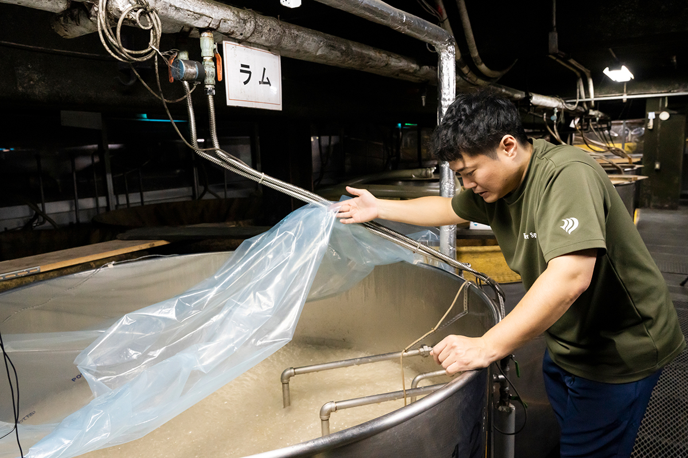
Проект
ONERUM: восемь островов, восемь вкусов
Команду ONERUM собрали в ноябре 2020 года. Её цель в том, чтобы через ром передать культуру Окинавы будущим поколениям. В проекте вместе с винокурней работают фермеры, университет, бары и исследовательские институты: они изучают сорта и места выращивания тростника, способы варки сахара и новые способы пить ром.
Тростник на Окинаве выращивают около 400 лет. Распространился он, как считается, благодаря Синдзё Гиме (1557–1644), чиновнику королевства Рюкю, который привёз на острова способ варить из тростника сахар. Сегодня тростник растёт по всей префектуре, а заводы чёрного сахара работают только на восьми малых островах: Агуни, Иэ, Ихэя, Ириомотэ, Кохама, Тарама, Хатэрума и Ёнагуни.
Работа началась с поездок на эти острова. Обычно думают, что тростник и чёрный сахар это просто сладость, но у сахара есть и солоноватость, и горечь, и кислинка, и долгое послевкусие, и поджаристые ноты. Команда выясняла, откуда берутся эти различия, и истории островов нарисованы теперь на этикетках. Мечта проекта в том, чтобы ромом, как вином, пробовали терруар тростникового поля и чтобы Окинава стала святым местом для любителей рома.
Первая линейка, Single Island Series, это ром из чёрного сахара одного острова. Первым в июле 2021 года вышел ром с Ихэи, за ним с Ёнагуни, Хатэрумы, Агуни, Кохамы, Тарамы, Ириомотэ и Иэ. Вторая, Blended Islands Series, соединяет сахар всех восьми островов. Обе быстро стали известны.
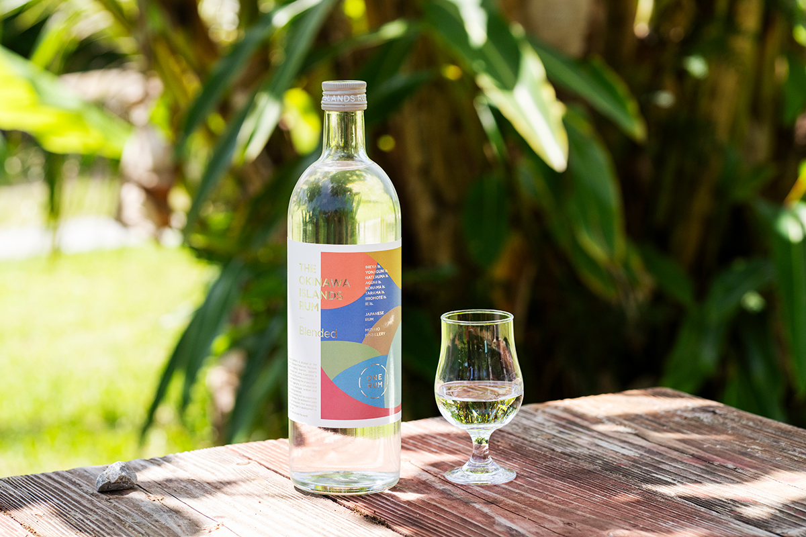
Третья линейка, One Island Series, задумана как агриколь: ром из чистого сброженного и перегнанного тростникового сока. Тростник для неё посадили на собственном поле винокурни в феврале 2021 года, а изучать собирались всё: сорта, почву, способы выращивания. В 2024 году ром этой серии обещали выпустить до конца года.
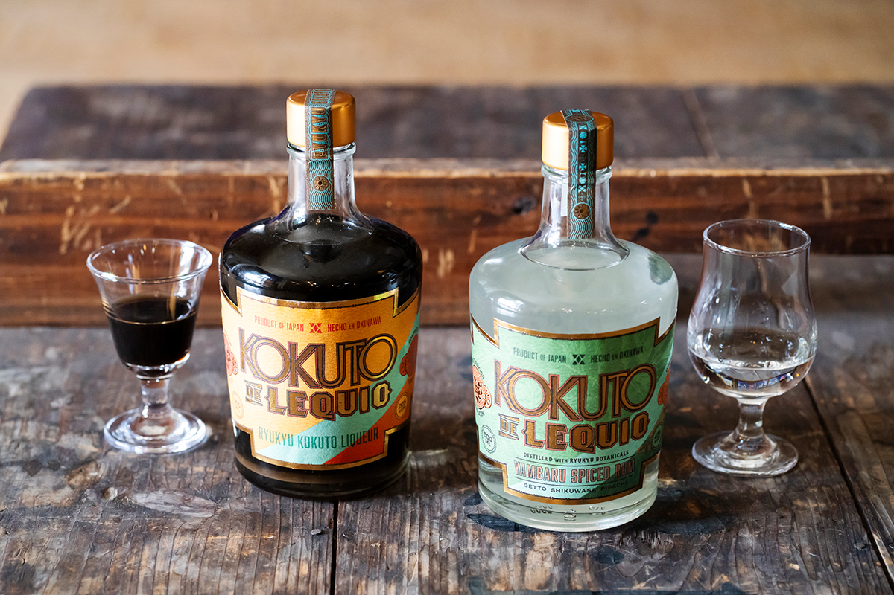
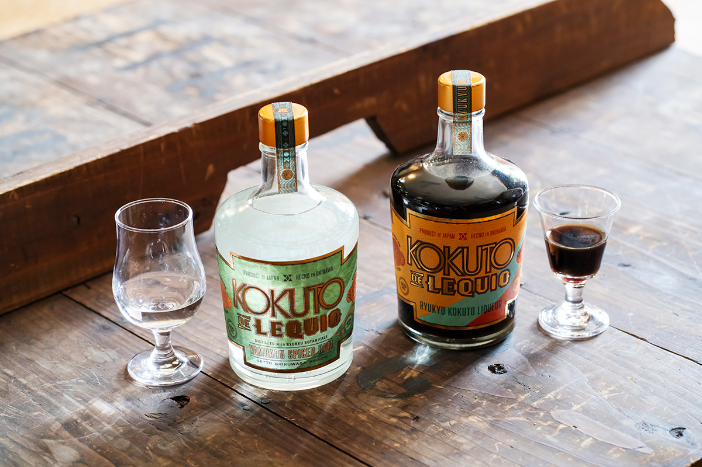
Первая бутылка
IHEYA ISLAND RUM
С рома IHEYA ISLAND RUM в 2021 году и началась Single Island Series. На одну бутылку объёмом 500 мл уходит около 700 г чёрного сахара с острова Ихэя (это расчёт по среднему выходу спирта из килограмма сахара). Дрожжи взяли с цветов сакуры из посёлка Мотобу.
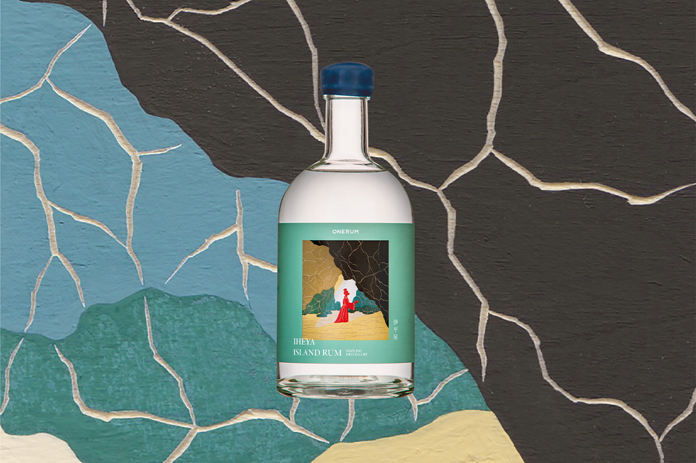
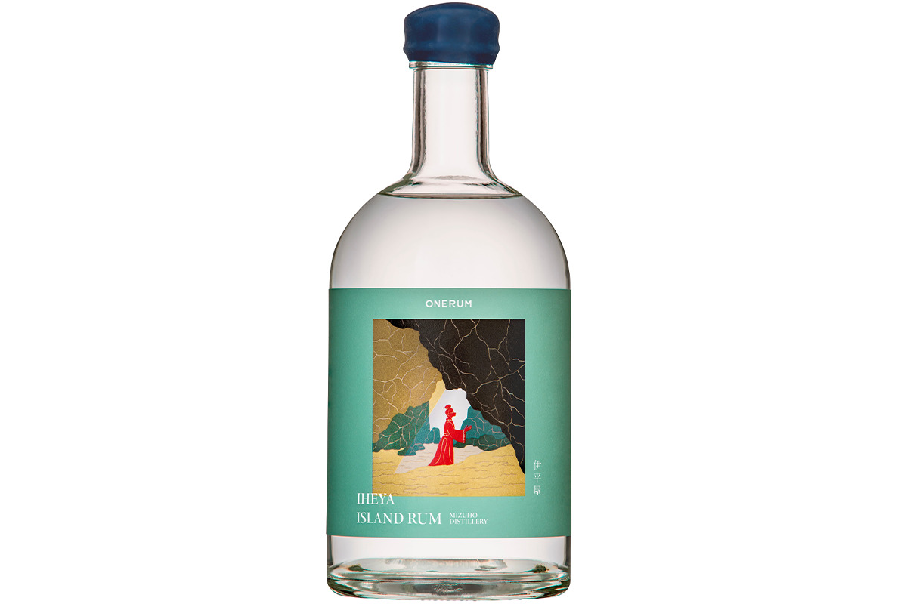
В аромате есть что-то от песочного печенья на сливочном масле, а потом раскрывается мягкая молочная нота кокоса, которая напоминает о южных островах. В конце чувствуется лёгкая солоноватость и пряное послевкусие.
Белый ром обычно идёт в коктейли, но этот достаточно ароматен, чтобы пить его чистым, со льдом или с содовой. Лучше всего вкус чёрного сахара раскрывает тоник. Дома несложно сделать и фруктовый хайбол с ананасом или другими южными фруктами и содовой, и «Куба либре» с любимой колой.
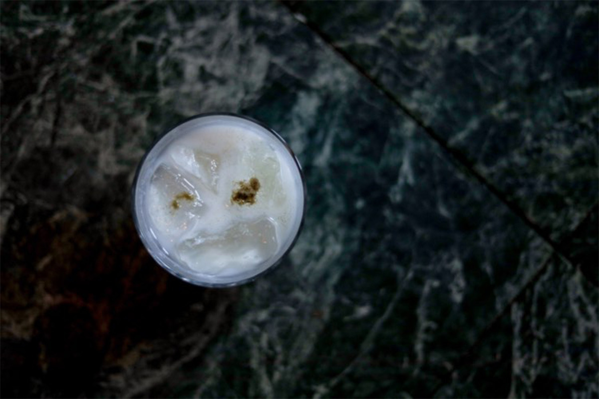
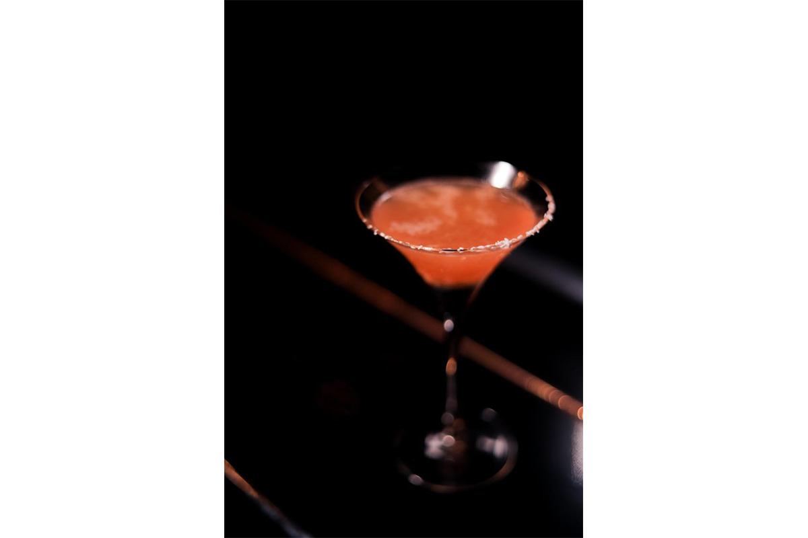
Остров
Ихэя: самый северный остров Окинавы
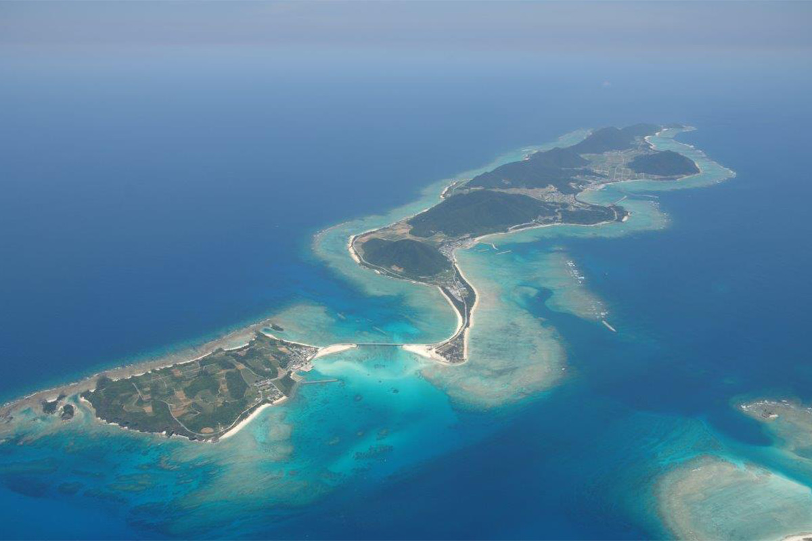
Ихэя лежит в 41 км к северу от острова Окинава и считается самой северной точкой префектуры. Здесь живут легенды о богах. На острове есть пещера Кумая, самое южное в Японии место, которое связывают с мифом о небесной пещере: в нём богиня солнца Аматэрасу спряталась в пещере, и мир погрузился во тьму. Из пещеры открывается вид на изумрудное море.
Около 70% острова занимают горы высотой 200–300 м. Кроме тростника здесь много выращивают риса. Площадь Ихэи 21,72 кв. км, в 2021 году на ней жили 1 134 человека, а за год с 2020 по 2021 остров сварил 466 тонн чёрного сахара. Паром идёт около 1 часа 20 минут из порта Унтэн в деревне Накидзин на севере острова Окинава.
Mizuho Shuzo
- Телефон
- +81 98-885-0121
Фото: Wataru Oshiro.